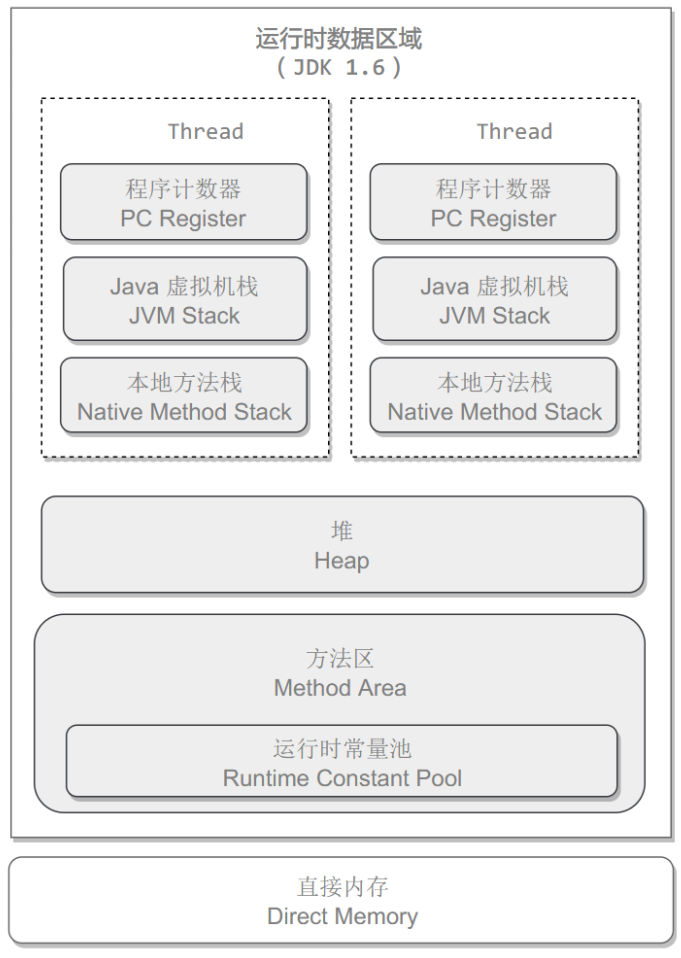
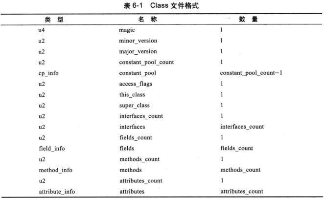

深入理解虚拟机-作业
重点看 第2章、第3章、第6章、第7章、第8章
注意：看不懂的可以先跳过，不要停下来，一般要看两三遍才能完全理解的，
大家把问题记录下来，年后统一解答
第2章：JAVA内存区域与内存溢出异常
运行时数据区
程序计数器
虚拟机栈
本地方法栈
堆
方法区
运行时常量区（方法区的一部分）
直接内存（非虚拟机运行时数据区）
第3章
第6章：类文件结构
无符号数属于基本的数据类型，以u1、u2、u4、u8来分别代表1个字节、2个字节4个字节和8个字节的无符号数，无符号数可以用来描述数字、索引引用、数量值，或者按照UTF-8编码构成的字符串值。
class类文件结构
一组以8位字节为基础单位的二进制流
- 魔数：
头四个字节
- class文件版本：
5-6字节 次版本(minor version) 7-8字节主版本(major version)
- 常量池：
主次版号之后就是常量池入口。分为：字面量、符号引用
符号引用,包括下面三类常量:
类和接口的全限定名（ Fully Qualified Name）
字段的名称和描述符（ Descriptor）
方法的名称和描述符
- 访问标识
第7章：类加载机制
虚拟机把描述类的数据从 Class文件加载到内存，井对数据进行校验、转换解析和初始化，最终形成可以被虚拟机直接使用的Java类型，这就是虛拟机的类加载机制。
类加载（class loading）时机
加载(loading)
验证(verification)
准备(preparation)
解析(resolution)
初始化(intialization)
使用(using)
卸载(unloading)
其中 准备、解析、初始化统称为“连接(linking)”。【加载、验证、准备、初始化、卸载】顺序确定，解析有可能在初始化后再开始（运行时绑定or动态绑定or晚期绑定）
何时加载？
需要初始化时,合适初始化？jvm规定4种条件。
jvms: https://docs.oracle.com/javase/specs/jvms/se8/html/jvms-5.html#jvms-5.5
加载
加载是类加载的一个阶段
验证
文件格式、元数据、字节码、符号引用
符号引用，确保解析动作能正常执行
解析
符号引用（Symbolic Reference）替换为直接引用（Direct Reference）
初始化
双亲委派模型
破坏模型
向下兼容：模型出现在jdk1.2,以前没有
JNDI、JDBC、JCE、JAXB，(线程上下文加载器)
OSGI：代码热替换(hotswap)，模块热部署（hot deployment）
第8章 虚拟机字节码执行引擎
jvms: https://docs.oracle.com/javase/specs/jvms/se8/html/jvms-2.html#jvms-2.6
执行引擎
运行时栈帧结构-（stack frame）
局部变量表（local variable）、
操作数栈(operand stacks)、
动态连接(dynamic linking)、
方法返回地址(return address)
附加信息
局部变量表
gc测试
《Practical Java》
局部变量必须初始化
操作数栈
也叫操作栈，（last in first out，LIFO）
java虚拟机的解释执行引擎称为“基于栈的执行引擎”
动态链接
符号引用->直接引用
类加载或第一次使用进行：静态连接
每一次运行期间进行：动态连接
方法返回地址
normal method invocation completion | Abrupt Method Invocation Completion
附加信息
允许增加jvms没有描述的信息到栈帧中，如调试信息。
实际中一般把动态链接、方法返回地址、其他附加信息归为一类—-栈帧信息
方法调用
方法调用 != 方法执行
解析
invokestatic
invokespecial
invokevirtual
invokeinterface
分派
第9章 类加载器及执行子系统和案例与实战
案例分析：
案例1: Tomcat正统类加载器
主流Java Web服务器Tomcat Jetty WebLog等都会实现自己的类加载器。
都需要解决的问题：
同一台服务器的两个web应用使用的java类库相互隔离，两个应用依赖的同一个第三方库不同版本
同一台服务器的两个web应用要相互隔离：
部署在同一个服务器上的两个Web应用程序所使用的Java类库可以实现相互隔离。这是最基本的需求，两个不同的应用程序可能会依赖同一个第三方类库的不同版本，不能要求一个类库在一个服务器中只有一份，服务器应当可以保证两个应用程序的类库可以互相独立使用。
部署在同一个服务器上的两个Web应用程序所使用的Java类库可以互相共享。这个需求也很常见，例如用户可能有10个使用 Spring组织的应用程序部署在同台服务器上，如果把10份 Spring分别存放在各个应用程序的隔离目录中，将会是很大的资源浪费—这主要倒不是浪费磁盘空间的问题，而是指类库在使用时都要被加载到服务器内存，如果类库不能共享，虚拟机的方法区很容易就会出现过度膨胀的风险。
服务器需要尽可能地保证自身的安全不受部署的Web应用程序影响。目前，有许多主流的 Java Web服务器自身也是使用Java语言来实现的。因此服务器本身也有类库依赖的问题，一般来说，基于安全考虑，服务器所使用的类库应该与应用程序的类库互相独立。
支持JSP应用的web服务器，十有八九都需要支持 HotSwap功能。我们知道JSP文件最终要被编译成 Java Class才能被虚拟机执行，但JSP文件由于其纯文本存储的特性，被运行时修改的概率远远大于第三方类库或程序自己的 Class文件。而且ASP、PHP和JSP这些网页应用也把修改后无须重启作为一个很大的“优势”来看待，因此“主流”的Web服务器都会支持JSP生成类的热替换，当然也有“非主流”的，如运行在生产模式（ Production mode）下的 WebLogic服务器默认就不会处理JSP文件的变化。
类库目录 common server shared WEB-INF
案例2：OSGI：灵活的类加载器架构
案例3：字节码生成技术与动态代理的实现
案例4：Retrotranslator：跨越JDK版本
JDK升级主要是4个方面：
- 在编辑器层面所在的改进。自动装箱拆箱
- 在java API的代码增强。jdk1.2 collections / jdk1.5 concurrent并发包
- 需要在字节码中进行支持的改动。JDK1.7动态语言支持，invokedynamic字节码指令
- 虚拟机内部的改进。jdk1.5 jsr-133重新内存模型(JMM)、CMS收集器
实战：自己动手实现远程执行功能
第10章 早期（编译期）优化
前端编译器:Sun的 Javac、Eclipse JDT中的增量式编译器（ECJ）
JIT编译器: HotSpot VM的C1、C2编译器。
AOT编译器: GNU Compiler for the Java（GCJ）、 Excelsior JET
 陕公安备案61092402000103号
陕公安备案61092402000103号